Motivation
The creation of 3D models purely with Open-Source-Software is challenging.
3D Modeling in general has quite a learning curve. I’m sure this is the case for many “casual” 3D modelers like myself. I’ve often created a model and continued working on it a year later - in the meantime forgetting all the details of the process.
But over the years I’ve found an approach that works well for me. In the following I’ll decribe my workflow for
- creating meshes (in OpenScad),
- creating textures (in Gimp),
- applying them (in Blender),
- viewing them (in Open3D Viewer)
- and using them in a game engine (in Ursina)
in order to help myself and others. The approach is also the basis for a number of my other projects.
Goal
Following the steps of this guide we will be able to create a textured, rotating sphere of the earth.
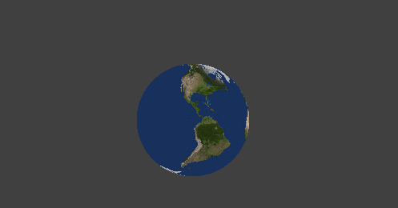
Contents
Background
My first attempts to create 3D models were for modifying games. Over the years I’ve found an approach and a set of tools to create 3D models, to texture them, to display and manipulate them in the simulation that works for me.
Tool Selection
The first time I tried 3D modeling I had seen custom content on the internet that could be downloaded for Electronic Arts Racing game “Need For Speed III”. Naturally I wanted to build my own custom cars.
Little did I know, at that time, that you need a whole host of software applications.
The process can be borken up into:
- Creating 3D Meshes,
- Creating Textures,
- Applying Textures,
- Viewing 3D Models
- and Using 3D Models
Each using different tools.
Creating 3D meshes
For the mesh creation I’ve tried a number of applications, but have settled for the simple to use OpenSCAD for almost all my 3D modeling needs.
CarCad
During my first attempts to create 3D models for games there was a freeware application “CarCad” [1] that I tried to use. With it you could move vertices of wireframes. The best I achieved was a box on skies.
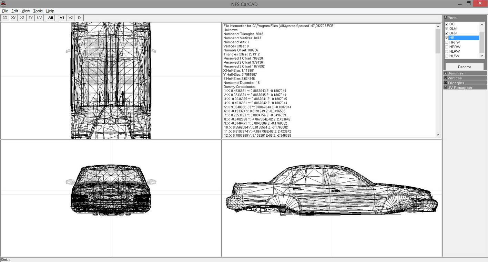
Milkshape
From there I tried Milkshape3D [2]. That application was worlds apart in terms of capabilities and features. I was able to model a car, but never got it to work in the game.
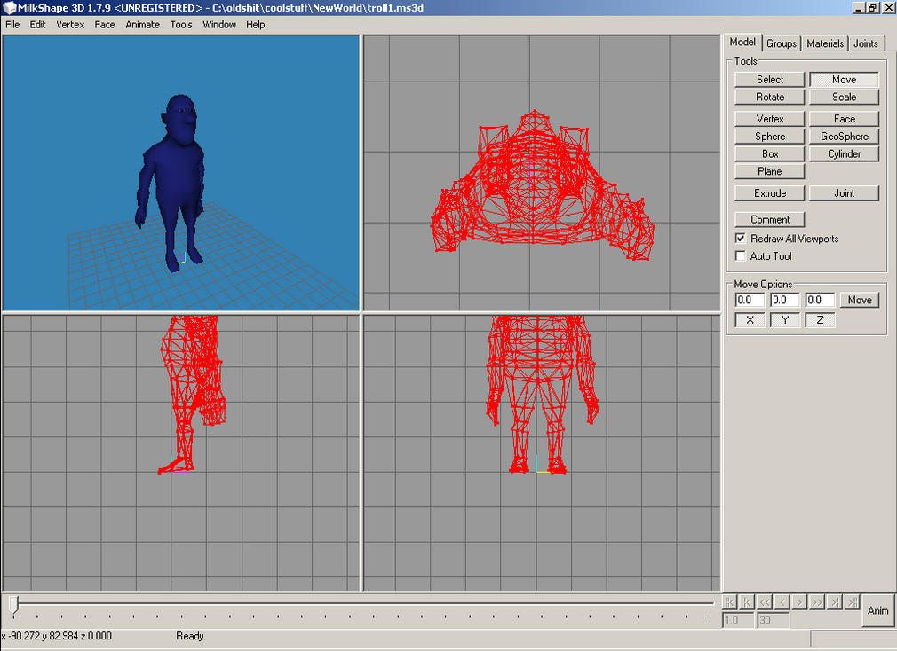
AutoCAD
For a brief period I tried a professional tool, “Autodesk AutoCAD”, but found it so involved that I ultimately gave up.
SketchUp
Then I found “SketchUp” and for the first time it was possible to intuitivly create a cube and pull it to size by clicking and pulling. From there it was literally childs play to combine three dimensional shapes. It was effectivly a true 3D “What you see, is what you get” application. For texturing you only had to drag and drop a texture onto a plane. That application was perfect apart from being difficult to set accurate measurements. Then Google bought it. The freeware vanished and it’s only available for free in a limited online version.
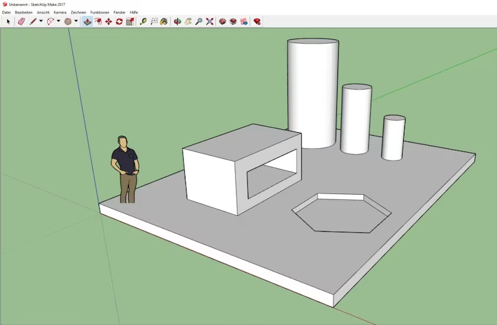
OpenSCAD
With the advent of affordable 3D printing in the 2010s I came into contact with OpenSCAD. This is so far the best 3D modeling application I’ve used. It’s a free and open-source, free of BS application that lets you describe your object. If you’re a programmer this is a highly effective and simple way of 3D modeling. It is unbelievable how simple things could have been all along.
It’s extremly fast and intuitive to 3D model, when you can simply describe what you want and the software follows the description.
In OpenScad you can even use variables, functions and modules like in any computer program to make code reusablere. The textural descriptions are easy and efficient to store in Git-Code-Repos.
For the first time it’s possible for a novice to quickly and easily create a 3D model without having to deal with complicated user interfaces that take years to learn.
You want a cube? Write “cube” and specify its dimensions.
cube([10,10,10]);
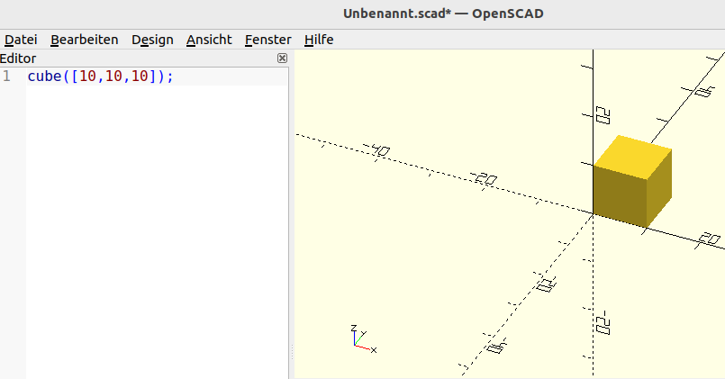
You want to move that cube? Write “translate” and specify the direction
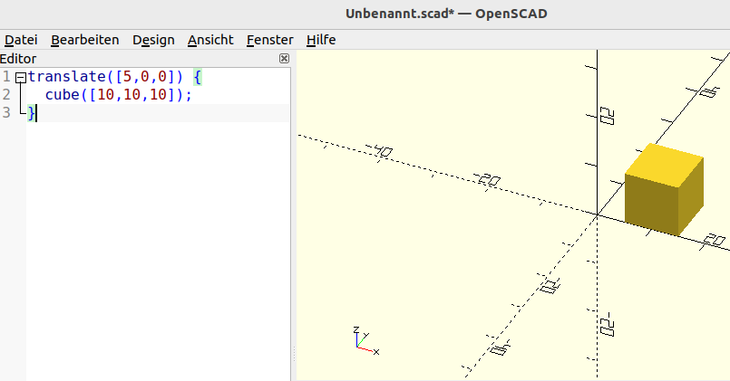
You want to rotate? You write “rotate” and the angles.
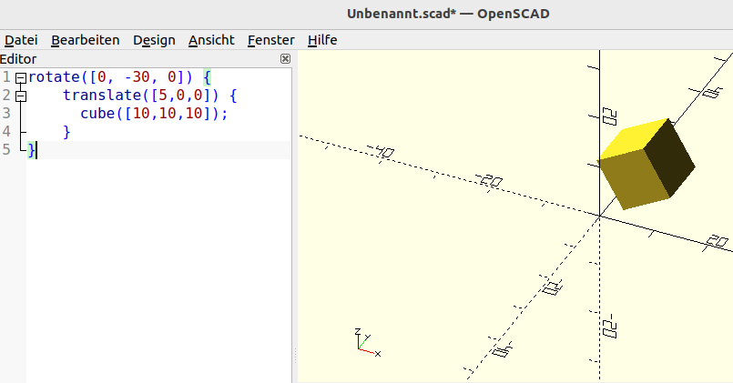
With the use of variables you can reuse the code.
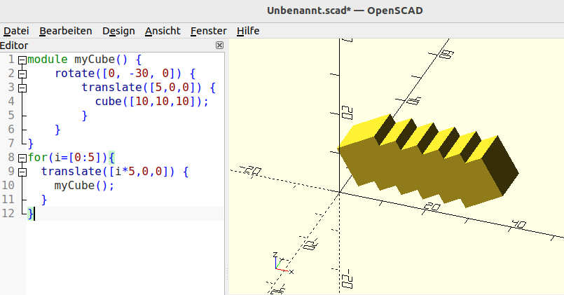
I’ve made entire 3D models of multi story buildings by drawing *.svg Vector graphics, loading it into OpenSCAD and extruding it.
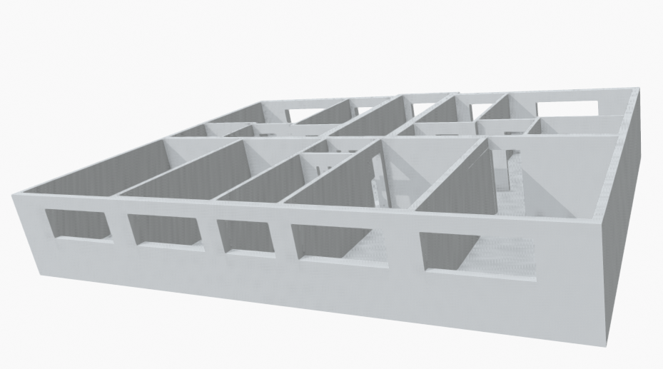
You can even use the $t variable that changes over time to make animations (see solar system animation)
But what OpenSCAD doesn’t do is texturing. You can set colours though.
Creating Textures
In order to “colour” (=texture) a 3D model you need to create texture graphics.
The process goes hand in hand with applying the textures. As you need to visualize your edits to the texture images on the 3D model as you are creating the texture image
Gimp
For creating the texture graphics I use Gimp. It is free, works well and supports layers, magic lasso selection, colour picker and paint bucket that are essential to effectively create texture images.
Applying Textures
In order to apply the texture to a 3D model the one tool I could never get around is Blender.
Blender
Blender has a steep learning curve due to a huge amount of features, an unintuitive interface and a plethora of bugs. It is still one of the best 3D applications and it’s incredible what professionals can do with it.
Game changing for me was when I found out that it could be scripted in Python. Finally I was able to tell the application what to do in a reproducable way. This is important as in Blender even menus appear, don’t appear or dissappear forever depending in what order you carry out actions. You need to take notes of the order of every button press you make to be able to reproduce anything. There are buttons on the user interface that you wouldn’t even visually identify as buttons. Who would have thought that you can set an image file under “base colour”? There are hidden menues everywhere and some vital details pop up in different corners of the screen every time you use it. If you had a small screen you’d likely see it, but then the interface probably wouldn’t display properly either. By the time you learn it they release a new version (2.8 to 3.5) and you have to relearn everything.
However, with much practice, I was able to texture a 3D model of the Earth and properly align the texture. For simple meshes such as spheres it may be faster to create them in Blender directly instead of using OpenScad as I’ll show below. However for more complicated meshes it is much easier to create the mesh in OpenSCAD and import the finished mesh to blender for texturing.
Scripting makes the application much more usable. My notes are code that I can run and I can rely on it working every time.
I believe the scripting capabilities will improve Blender not only for users, but also for developers working on it, as it allows developers to write proper unit tests and reproducde errors.
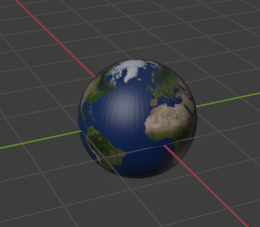
Viewing 3D Models
At that point it makes sense to verify the model in a 3D viewer to make sure nothing has gone wrong.
Open3D Viewer
A nice tool to quickly view 3D models is “Open3D Viewer”. On Ubuntu we can install it by
sudo apt install open3d-gui
Using 3D Models
We then have a 3D model, but what do we do with it? This is where game engines come into play. There we can can move and rotate the model programmatically and implement meaningful software.
Unity Game Engine
A popular Game Engine that I have used for this is the Unity Game Engine. With it I’ve created 3D worlds with 3D Objects from the Unity Store, SketchUp models and my own OpenSCAD + Blender Models. However for simple simulations and small games the Unity Game Engine also has a steep learning curve and may be overkill.
{kind=link}
A 3D world of custom 3D objects I've made in Unity
Ursina
For smaller simulations I’ve come to like the “ursina engine”. It is written in Python, loads and displays 3D objects and allows programmatic rotation and translation of the objects.
Programming is simple. There is an update() function that gets called automatically. In this function the cube can then be manipulated by altering cube.position and cube.rotation based on the time that passed since the last call, store in the variable time.df.
The following code is sufficient to show and rotate a cube (with lighting and shadows).
from ursina import *
app = Ursina()
EditorCamera()
pivot = Entity()
DirectionalLight(parent=pivot, y=2, z=3, shadows=True, rotation=(45, -45, 45))
cube = Entity(model='cube', color=rgb(73,128,109), scale=(1, 1, 1), position=(0,0,0), collider='box')
def update():
cube.rotation += Vec3(0,1,0.5) * time.dt * 100
app.run()
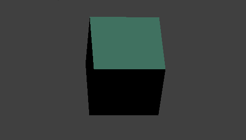
How
With the background and tool selection out of the way we can create the actual 3D model.
2.1 Creating a Mesh of a sphere
For the mesh creation we have a couple of options. We can use OpenSCAD, but in simple cases like for only creating a sphere we can also use Blender directly with and without scripting. I’ll describe all approaches below.
2.1.1. in OpenSCAD
Creating a sphere in OpenSCAD is easy
$fn=64;
sphere(r=100);
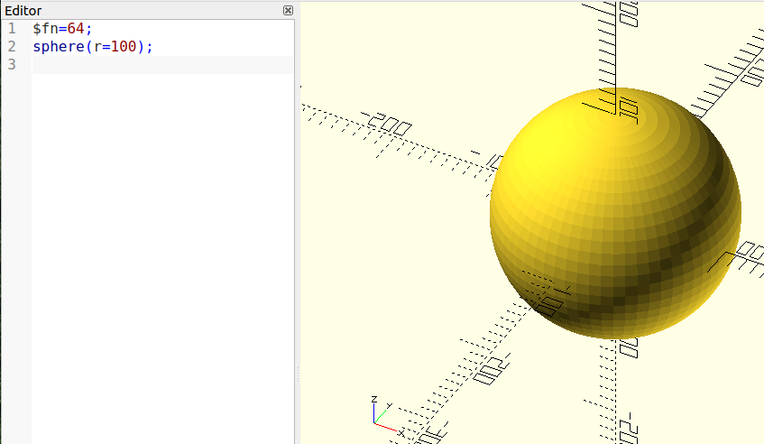
2.1.2. in Blender by User Interface
In Blender we can create the sphere via the user interface
- Step 1 Load the application. I’m using Blender 3.6.3.
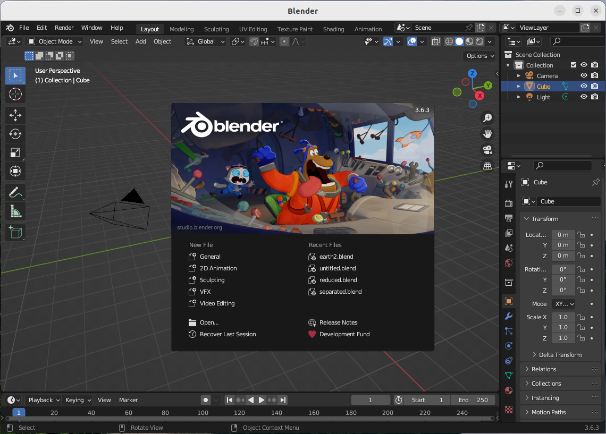 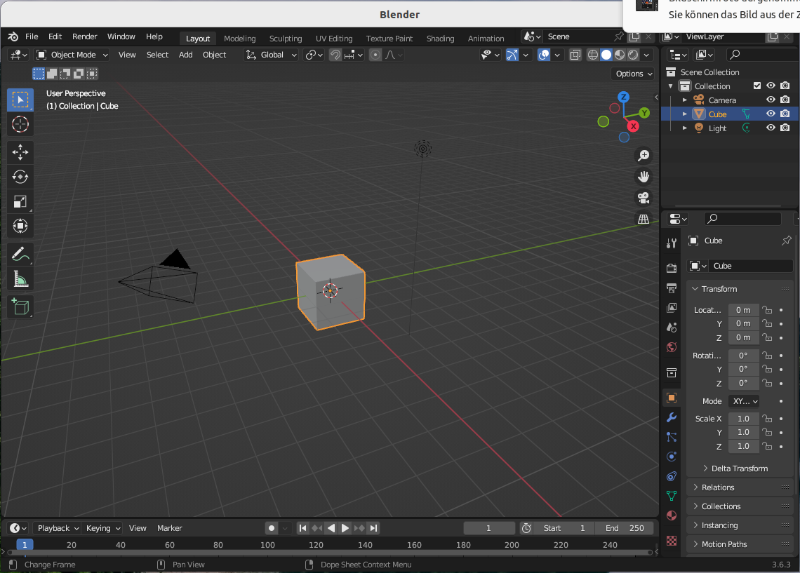
- Step 2 [Tab] to switch to “Edit Mode”
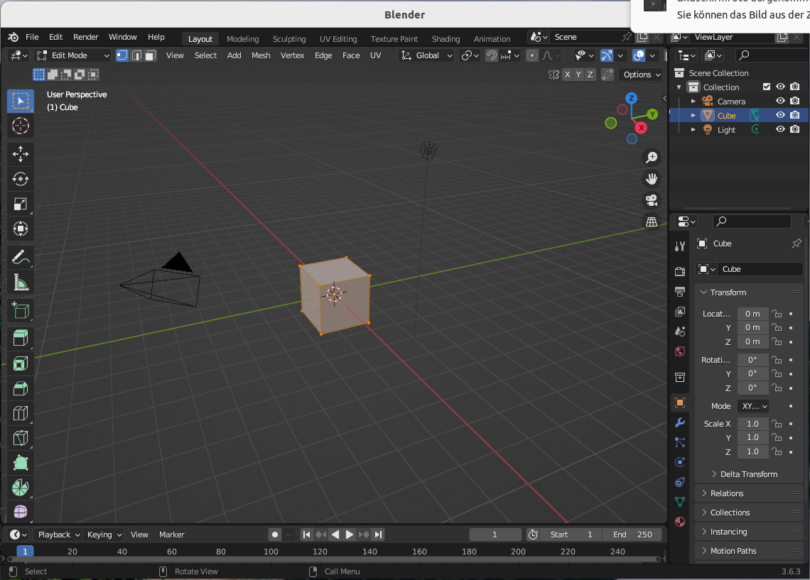
Note:
-
Blender two concepts mixed: tabs (“Layout”, “UV Editing” and “Texture Paint”), to center of the screen, and modes (“Object Mode” and “Edit Mode”), on the top left of the screen. We will need both.
- it won’t let you switch to “edit mode”, if there is no object selected. You have to switch to “edit mode” before deleting the intial cube in step 3.
-
you need to be in “edit mode” when creating the “UV Sphere” in step 4, otherwise the UV Sphere options will be greyed out.
- Step 3 Now, in “edit mode”, [DEL] and select “vertices” in the menu that pops up to remove the cube that is automatically added when loading Blender
Note:
-
In “object mode” it would delete the cube straight away, but as we’re in “edit mode” we need to select “vertices”.
-
Step 4 [SHIFT]+[a] (not [CTRL]), then click “Mesh” and “UV Sphere”
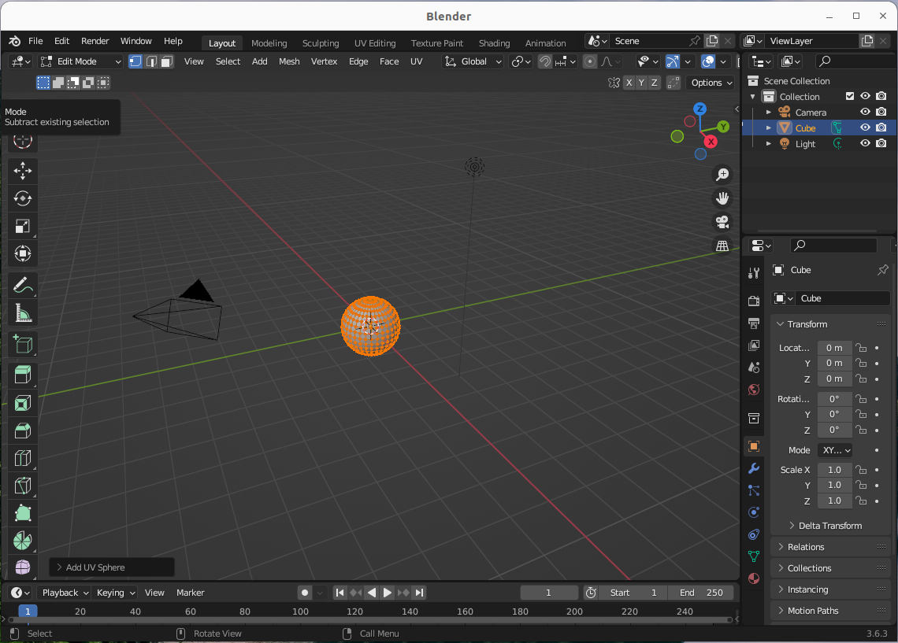
- Step 5 Don’t click anything. Notice the menu on the bottom left of the screen
- Step 6 Open that menu by clicking on the arrow
That menu is vital as it allows us to configure the “segments” and “rings” of the sphere.
The default values are low and this causes the sphere to have a very unround appearance. Set them to 64 each.
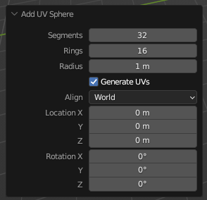
Note:
- you’d expect these settings on the right hand side where we configure “Location” and “Rotation”, but instead they are on the bottom left corner.
- if you close this menu it will dissapear forever.
- if you create the UV Sphere in “Object Mode”, then the menu will appear, but the fields will be greyed out. It’s up to the user to guess why.
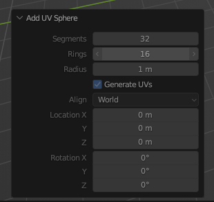
2.1.3. in Blender by Script
We can also create the sphere in Blender from Python by scripting
We first clear the initial cube
import bpy
try:
bpy.ops.object.mode_set(mode='OBJECT')
bpy.ops.object.select_all(action='SELECT')
bpy.ops.object.delete(use_global=False)
except:
pass
then create a sphere with a set number of segments and rings.
mesh = bpy.data.meshes.new('Basic_Sphere')
basic_sphere = bpy.data.objects.new("Basic_Sphere", mesh)
bpy.context.collection.objects.link(basic_sphere)
bm = bmesh.new()
bmesh.ops.create_uvsphere(bm, u_segments=32, v_segments=16, radius=1)
bm.to_mesh(mesh)
bm.free()
Note:
- “rings” in the user interface are “v_segments” in the code
if you wanted to import a mesh from OpenSCAD you could instead do
imported_object = bpy.ops.import_scene.obj(filepath="mesh.obj")
obj_object = bpy.context.selected_objects[0]
2.2. Applying a Texture
With the mesh ready we can apply a texture. For the sphere of the earth there are ready made textures we can apply. If you’re creating a model of something else you would be editing the texture in GIMP, likely by overlaying an UV Layout export from Blender, and viewing the changes in Blender (or Open3D Viewer) as you edit.
You can get the texture of the earth from [4] by
wget https://www.solarsystemscope.com/textures/download/2k_earth_daymap.jpg
2.2.1. in Blender by User Interface
Step 1 Back in Blender we UV unwrap the sphere by deselecting (!) the sphere (click somewhere else) and doing [u] and selecting “unwrap”
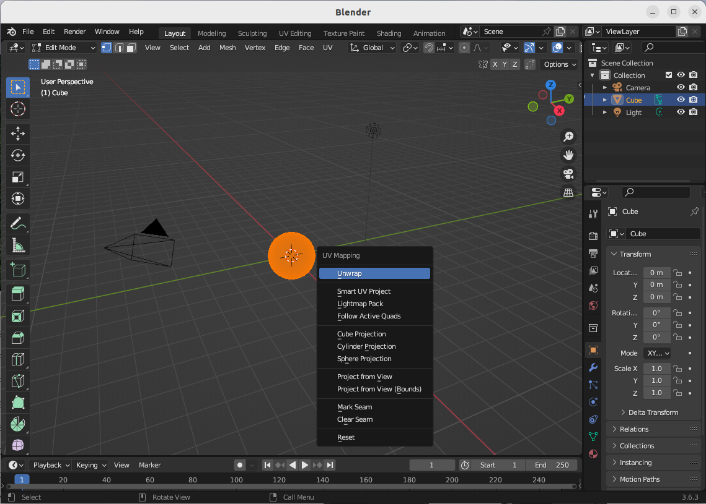
Step 2 Click on “UV Editing”
Now there are many possible outcomes. I usually redo this a couple of times until the texture map looks as below.
Note:
- caution don’t do [CTRL]+[z] (undo) as that may crash the application
- the different behaviours seem to have to do the object being selected or not during “unwrap”, if you’re in edit mode or not, but “unwrap” and “smart unwrap” seem to behave similarly. Also doing “Mark Seam” seems to has an effect on “smart unwrap”, but not on “unwrap”.
You want it to look like this.
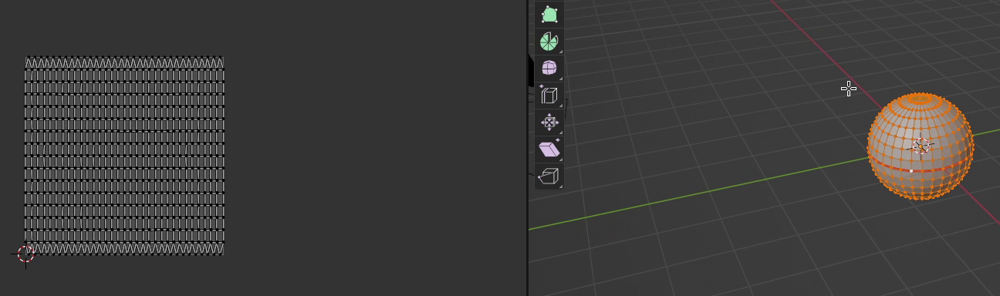
Other results - that we don’t want - can be:
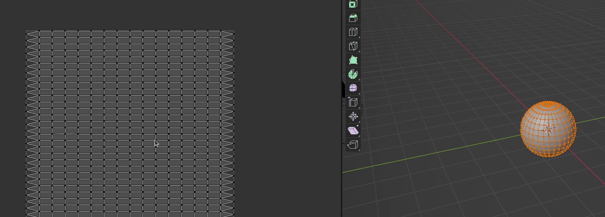 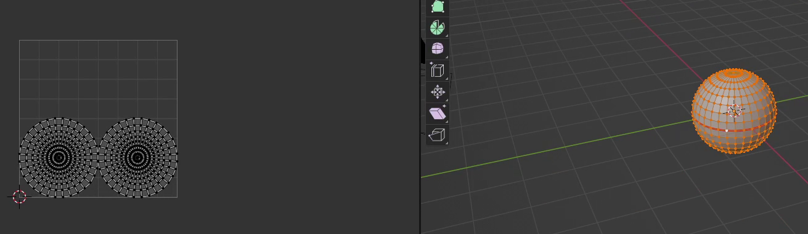 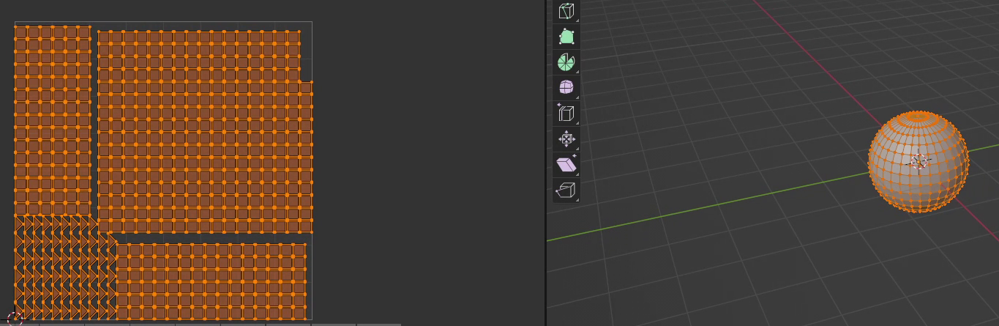
If that happens start over and try doing things slightly differently.
Step 3 We can now load the texture image by menu - as you’d expect
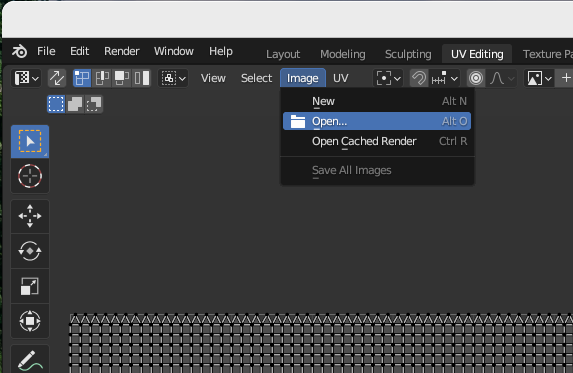
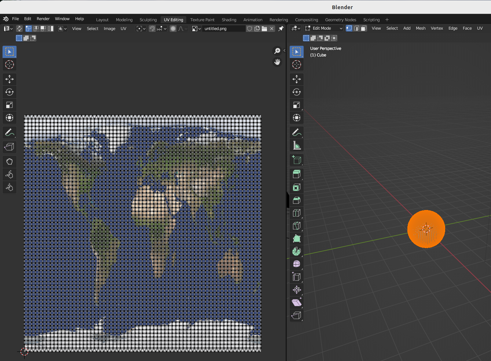
However this doesn’t apply the texture to the UV sphere.
Step 4 On the far right click on the symbol for “Material”
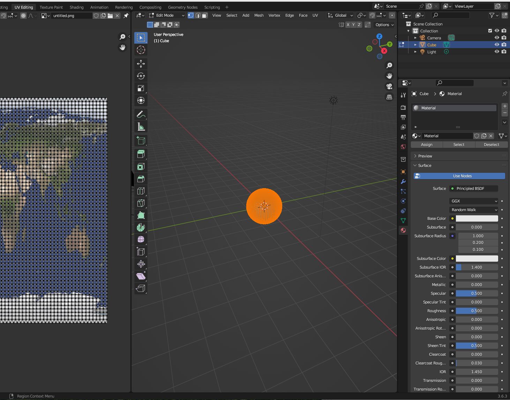
note:
- this creates a “Principled BDSF” by default. You may feel the urge to use something simpler, but don’t. From my experiments any other selection, while it may look fine in the editor, will not properly export the object with the texture later.
Step 5 Then click on the last place you’d expect, on the yellow dot, for the “Base Color”
This opens a menu I call the “hidden menu”. It has an entry for “image texture”
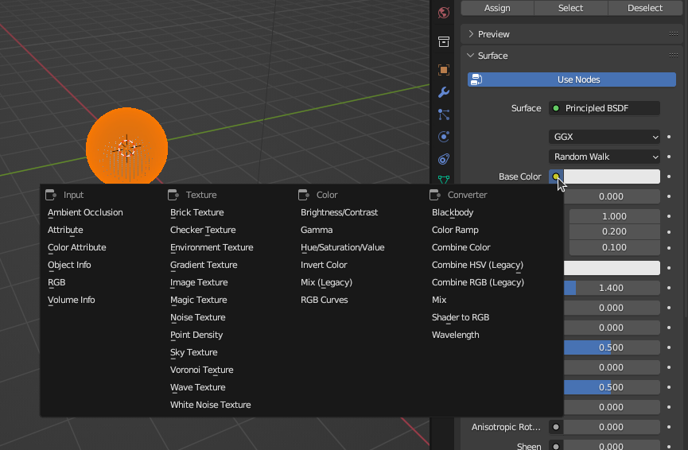
Step 6 Click on “image texture”
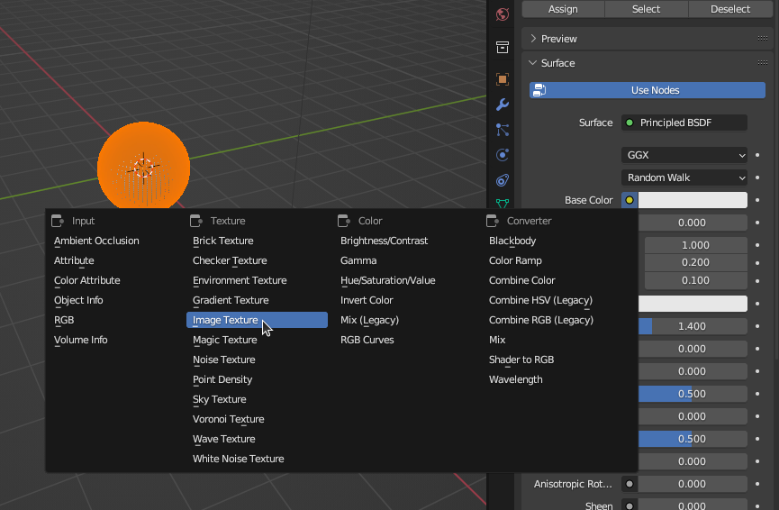
Step 7 Click “open”
This doesn’t open a file browser, but secretly changes the right-hand menu to contain an “Open” button
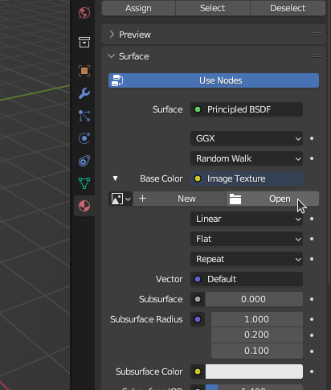
Click on that and you get a file browser. Set the texture again.
Step 8 To finally show the object with the texture switch to the “Texture Paint” tab
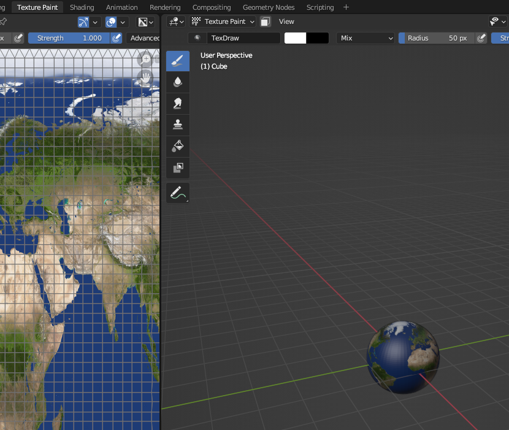
Step 9 Open Export Dialog to Wavefront *.obj
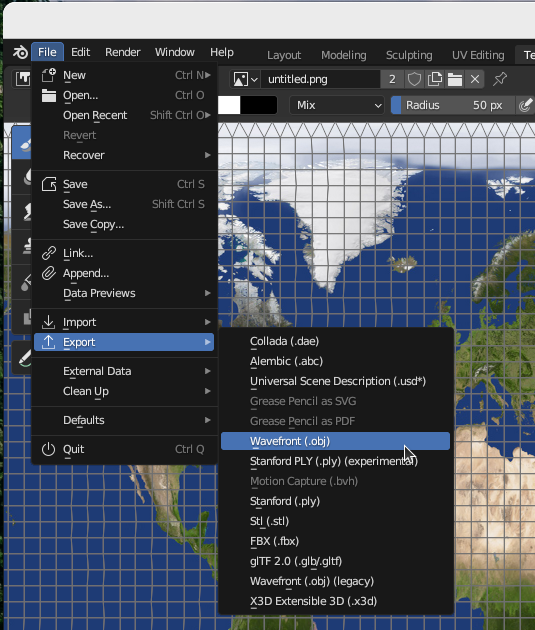
Step 10 Set to actually export the object with the texture
The default configuration won’t export the texture
You need to select “triangulated mesh” under “Geometry” and “Export” under “Materials”.
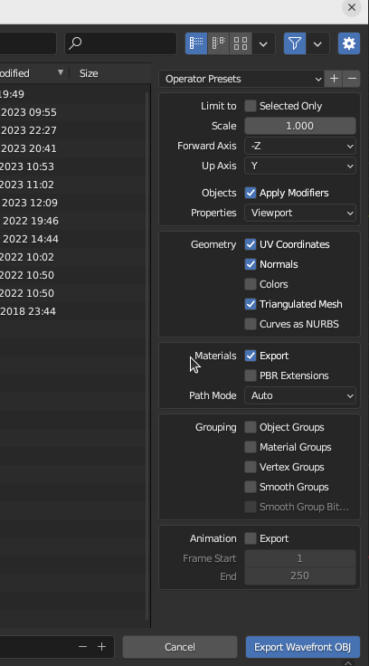
Step 11 Verify in another tool
The export should yield
- untitled.obj
- untitled.mtl
- plus your original texture file, in my case untitled.png
The *.mtl file is a simple text file that you can edit. Make sure the “map_Kd” specifies a valid path to your texture file.
# Blender 3.6.3 MTL File: 'None'
# www.blender.org
newmtl Material
Ns 250.000000
Ka 1.000000 1.000000 1.000000
Ks 0.500000 0.500000 0.500000
Ke 0.000000 0.000000 0.000000
Ni 1.450000
d 1.000000
illum 2
map_Kd untitled.png
Open3D can be used to verify the object is properly stored with the texture
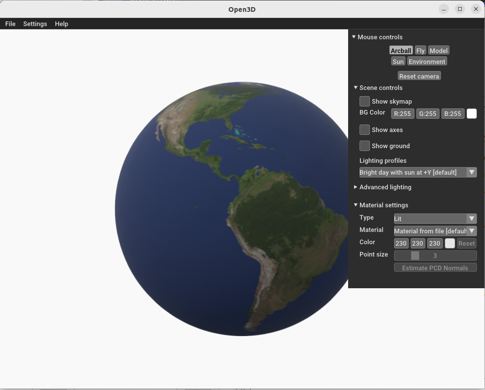
2.2.2. in Blender by Script
By scripting we get more reproducable results. Here we do the UV unwrap to map the 3D Object to the 2D Texture
bpy.ops.uv.smart_project(angle_limit=radians(66), island_margin = 0.00)
We setup a new material, set the an image file as its base color
material = bpy.data.materials.new(name="mymaterial")
material.use_nodes = True
bsdf = material.node_tree.nodes["Principled BSDF"]
texImage = material.node_tree.nodes.new('ShaderNodeTexImage')
texImage.image = bpy.data.images.load("texture.png")
material.node_tree.links.new(bsdf.inputs['Base Color'], texImage.outputs['Color'])
Then run the scirpt with
blender --python "script.py"
2.3. Display the textured sphere
Now that we have the Mesh of the sphere and the texture we can load it into a game engine.
2.3.1. in Ursina
In order to load and automatically rotate the 3D model we can write a short script view.py
from ursina import *
app = Ursina()
EditorCamera()
pivot = Entity()
earth = Entity(model="earth.obj", scale=0.5, texture=("earth.png"))
earth.rotation = Vec3(0, 90, 0)
def update():
earth.rotation += Vec3(0,0.8,-0.2) * time.dt * 100
app.run()
and run it by
python3 view.py
This yields
Progress
With that we have a tried and proven approach to creating 3D models.